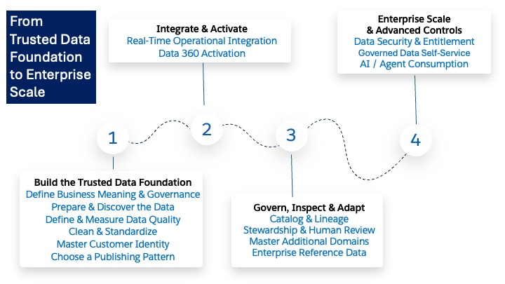
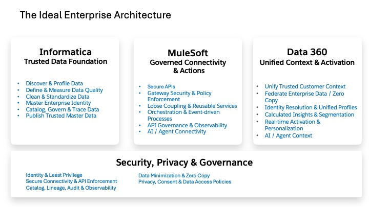
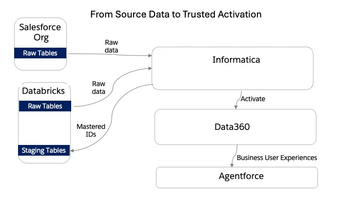

An Interactive Journey
In this workshop, you follow customer data through the same journey many enterprises face. You start with messy customer records spread across systems such as Salesforce and Databricks. Using Informatica, you discover what data you have, agree on what "good" data should look like, measure its quality, standardize inconsistent values, and separate clean records from those that need attention. You then use MDM to determine which records across systems belong to the same customer and create a trusted golden record with a persistent enterprise ID and traceability back to its source systems.
From there, you see how that trusted customer identity can be shared with other systems through batch, APIs, or events, and how Salesforce Data 360 can combine it with behavioral and transaction data from Databricks to create unified profiles, insights, segments, and activation.
Finally, you look at the same journey through a governance and security lens: who should be able to see or change the data, how to minimize unnecessary access and copying, how to preserve the original source data, how to catalog and trace data across systems, and how to make sure trusted customer data remains governed as it moves from source to activation.
By the end, you should understand how Informatica and Salesforce Data 360 fit together as an end-to-end approach for turning fragmented, poor-quality customer data into trusted, governed, activation-ready data.
Our data journey: messy data → understand it → clean it → master it → share it → activate it → govern and secure it
Workshop Scope: The data profiling, quality, standardization, MDM, catalog and governance exercises are hands-on or live examples. Publishing patterns, Data 360 activation, and portions of end-to-end runtime lineage are explored architecturally.

Define Business Meaning & Governance (Lab 1): Establish the business vocabulary, policies, systems and processes that describe what the customer data means and how it should be governed.
Prepare & Discover the Data (Labs 0, 2): Prepare connectivity to Salesforce and Databricks, then profile the raw data to understand its condition and identify quality problems without modifying the source records.
Define & Measure Data Quality (Labs 3, 4A): Agree on what valid and standardized data should look like, implement reusable dictionaries and Rule Specifications, and measure the raw data against those standards.
Clean & Standardize (Lab 4B): Use Informatica Cloud Data Integration (CDI) and Data Quality assets to standardize fixable values, validate records and route clean data to staging while sending failures to exception tables. The original source data remains unchanged.
Master Customer Identity (Lab 5): Use Customer 360 to match records across Salesforce and Databricks, confirm merge decisions, apply survivorship and create a trusted Golden Record with a persistent MDM Business ID and traceability to its contributing source records.
Choose a Publishing Pattern (Lab 6): Evaluate how mastered customer data should be made available to consumers using CDI batch publishing, Customer 360 APIs, CAI orchestration, or Business 360 Events/Egress. The appropriate pattern depends on volume, latency, initiator and operational requirements.
Real-Time Operational Integration: Where the business requires it, introduce API-led patterns such as Search-Before-Create so operational applications can check trusted MDM identity before creating another customer. MuleSoft or Informatica CAI are possible orchestration technologies; this is a production extension rather than an implemented workshop exercise.
Data 360 Activation (Lab 7): Send mastered customer identity from Informatica MDM to Salesforce Data 360 through an ingestion pattern, while federating Databricks engagement and transaction data through Zero Copy. Data 360 can then relate trusted identity to customer behavior for Unified Individuals, calculated insights, segmentation and activation.
Catalog & Lineage (Lab 8): Use Metadata Command Center (MCC) to discover metadata and Cloud Data Governance and Catalog (CDGC) to connect technical assets with common business meaning and inspect the lineage that is available.
Stewardship & Human Review: Operationalize stewardship processes for ambiguous matches or other records requiring human judgment, with review thresholds and responsibilities defined by the organization's governance policy.
Master Additional Domains: Extend the MDM approach to other appropriate enterprise domains such as Product, Location or Supplier.
Enterprise Reference Data: Use Reference 360 to centrally manage shared reference data such as code lists, lookup values, hierarchies and crosswalks instead of maintaining inconsistent copies across applications.
Data Security & Entitlement: Introduce Informatica Cloud Data Access Management (CDAM) to define metadata-driven access and protection policies and enforce appropriate controls across supported data platforms.
Governed Data Self-Service: Introduce Informatica Cloud Data Marketplace so business users can discover governed data products, request access and have those requests fulfilled and tracked through governed processes.
AI / Agent Consumption: Make trusted customer context available to enterprise AI experiences, combining mastered identity with the relevant Data 360 profile, behavioral and analytical context while continuing to apply the same governance and access controls.

In our workshop, Salesforce and Databricks provide the source customer data used by Informatica for quality, standardization and mastering. Informatica MDM creates the trusted customer identity and persistent MDM Business ID, which is written back to a Databricks staging table — and then brought into Salesforce Data 360. Separately, Databricks behavioral and transaction data provides the customer activity used for insights, segmentation and activation.
The three platforms work together. Informatica establishes the trusted data foundation; MuleSoft provides controlled APIs, integration and orchestration; Data 360 brings trusted identity and enterprise context together for insights and activation. Security, privacy and governance span all three.
In this workshop, we follow customer data from messy records spread across systems such as Salesforce and Databricks to a trusted customer identity.
Informatica helps you understand the data, measure its quality, clean and standardize it, and master records from different systems into a trusted golden customer.
We then explore how Salesforce Data 360 can combine that trusted identity with behavioral and transaction data for insights, segmentation and activation.
Throughout the journey, security, privacy, governance, lineage and traceability are treated as part of the architecture rather than added at the end.

| Lab | Title | Focus |
|---|---|---|
| 0 | Connect | Prepare the environment and securely connect Salesforce, Databricks, Informatica IDMC and Data 360. |
| 1 | Govern | Define the business meaning of the data — common terms, policies, systems and business processes. |
| 2 | Discover | Profile the raw Salesforce and Databricks data to understand what is actually there without changing anything. |
| 3 | Agree | Use profiling results to decide what "good" data should mean: what is valid, what should be standardized, what should be rejected. |
| 4A | Measure | Turn agreed standards into reusable Informatica rules and dictionaries; apply them and produce measurable data-quality results. |
| 4B | Standardize | Clean and standardize fixable values, validate, route clean to staging and failures to exception tables. |
| 5 | Master | Determine which records represent the same customer across systems and create a trusted golden record. |
| 6 | Publish | Explore how trusted master data should be made available — batch, APIs, events or egress. |
| 7 | Activate | Bring trusted customer identity into Salesforce Data 360 with Databricks behavioral data for insights and activation. |
| 8 | Catalog & Trace | Discover and catalog metadata, connect technical fields to business meaning, and inspect lineage. |
| 9 | Security Review | Review the architecture through a security, privacy and governance lens. |
Profiling tells us what the data looks like. Data Quality determines whether it meets our standards and helps standardize it. MDM determines which records belong to the same customer and establishes the trusted customer identity.
CDGC and MCC help us understand what the data means, where it exists, how it is governed, and how it moves across the landscape.
Salesforce Data 360 combines that trusted identity with customer activity and other data so it can be used for unified profiles, insights, segmentation, and activation.
IDMC — Informatica Intelligent Data Management Cloud: The Informatica cloud platform that brings together the data integration, data quality, MDM, governance, catalog and related services used throughout this workshop.
Secure Agent: The Informatica runtime installed in the customer environment that executes integration and data-processing work and provides controlled connectivity between IDMC and systems such as Salesforce and Databricks.
CDI — Cloud Data Integration: The Informatica service used to build and run data pipelines; in this workshop CDI reads source data, applies cleansing and validation logic, and writes standardized records to staging or exception tables.
CAI — Cloud Application Integration: The Informatica service used to build API- and process-oriented integrations where an application needs orchestration, logic or a reusable service around calls to systems such as MDM.
Cloud Data Profiling: The Informatica capability used to inspect raw data and report facts such as nulls, distinct values, patterns, value distributions and minimum/maximum values without changing the data.
Cloud Data Quality / CDQ: The Informatica capabilities used to define, measure and apply reusable data-quality and standardization logic.
Rule Specification: A reusable Data Quality rule that tests whether data meets an agreed condition and returns a result such as pass/fail.
Dictionary: A managed set of recognized or standardized values used by data-quality rules and cleansing logic.
Cleanse Asset: A reusable Data Quality asset that actually transforms or standardizes values.
CDI Mapping: A visual data pipeline that connects sources, transformations, rules, routing logic and targets.
Router: A CDI transformation that sends records down different paths based on conditions.
MDM — Master Data Management: The discipline and technology used to determine which records across systems represent the same real-world entity and to create a trusted master representation.
Customer 360 SaaS: Informatica's MDM application for customer data; in this workshop it is where imported customer records are searched, matched, merged and inspected.
Business 360 Console: The Informatica design and administration application used to configure the MDM model.
Business Entity: The MDM definition of a business object being mastered, such as the Person entity used for customers.
Source System: The system from which an MDM source record originated, such as Salesforce or Databricks.
Match Model: The MDM configuration that defines how Informatica determines whether records might represent the same entity.
Merge: The decision to combine records determined to represent the same customer.
Survivorship: The rules that determine which source's value should become the trusted value when matched records differ.
Golden Record: The trusted master representation produced by MDM after matching, merge and survivorship decisions.
MDM Business ID: The persistent identifier assigned by Informatica MDM to the mastered business entity.
Source Records: The original contributing records retained underneath a golden record for traceability.
Business 360 Events: An event-driven integration option that can notify downstream consumers when mastered data changes.
Business 360 Egress: A managed pattern for exporting mastered data from Business 360 for downstream consumption.
CDGC — Cloud Data Governance and Catalog: The Informatica service used to give data common business meaning, document policies and processes, discover technical assets and allow users to search and understand governed data.
Business Term: A governed definition of a business concept that can be associated with different physical fields across systems.
Policy: A governance statement documenting how data should be handled or governed.
Technical Asset: A cataloged physical object such as a Salesforce object or field, Databricks table or column, or integration asset.
MCC — Metadata Command Center: The Informatica service used to configure, run and monitor metadata discovery from systems such as Salesforce, Databricks and IDMC.
Catalog Source: An MCC configuration that tells Informatica which system to scan and which metadata to discover.
IDMC Metadata: Metadata about assets created inside Informatica itself, such as CDI mappings, which can be synchronized into the catalog.
Lineage: The technical representation of how data moves or is transformed from one asset to another.
SEED: The starting asset displayed in a lineage view.
Salesforce Data 360: Salesforce's data platform for bringing customer identity, engagement and other enterprise data together for unified profiles, insights, segmentation and activation.
Data 360 Ingestion API: The API pattern used to send trusted mastered customer identity from Informatica MDM directly into Salesforce Data 360.
Zero Copy: A Data 360 integration pattern that allows data such as Databricks behavioral and transaction data to be used without creating another physical copy inside Data 360.
DMO — Data Model Object: A standardized Data 360 data object used to represent concepts such as individuals, email addresses, phone numbers or identifiers.
Party Identification: The Data 360 object used to carry the persistent Informatica MDM identifier.
Identity Resolution: The Data 360 capability that relates source profile information and produces a unified representation of an individual.
Unified Individual: The Data 360 representation of a person after identity resolution.
Calculated Insight: A derived metric calculated from underlying data.
Segment: A dynamically defined group of customers meeting specified criteria.
Data Graph: A Data 360 structure that brings related profile, engagement, transaction and calculated data together.
Activation: Using trusted and unified customer information in a downstream business process, audience, application or experience.
Real-Time & API Orchestration (CAI): Cloud Application Integration was turned off (Process Server disabled in the test environment). The workshop relies on CDI batch mappings rather than real-time, event-driven integrations or search-before-create APIs.
Data Access Governance Enforcement (DAM): The Data Access Management Agent & Proxy were disabled. The architecture reads/writes data but does not enforce row-level filtering, dynamic column masking, or policy pushdown at the Databricks layer.
Native Exception & Human Stewardship UI: Data quality exceptions are written directly to Databricks delta tables. Production deployments route exceptions to Informatica's native Human Task / Exception Management UI.
Automated MDM Merge Workflows: MDM merges were triggered manually via the UI. Production environments run automated match/merge jobs that auto-consolidate high-confidence pairs and push ambiguous pairs to a Human Workflow Inbox.
Enterprise Reference Data (Reference 360): Reference dictionaries were built directly inside CDQ via CSV imports instead of using Reference 360 for enterprise code-set management.
Informatica Data Marketplace & Asset Profiling: The workshop uses standalone Cloud Data Profiling (CDP) instead of catalog-integrated profiling, and omits Data Marketplace.
Production Egress Taskflows: Publishing from MDM to downstream systems was analyzed conceptually rather than built using native Business 360 Egress jobs or taskflows.
Trusted Data Foundation Workshop